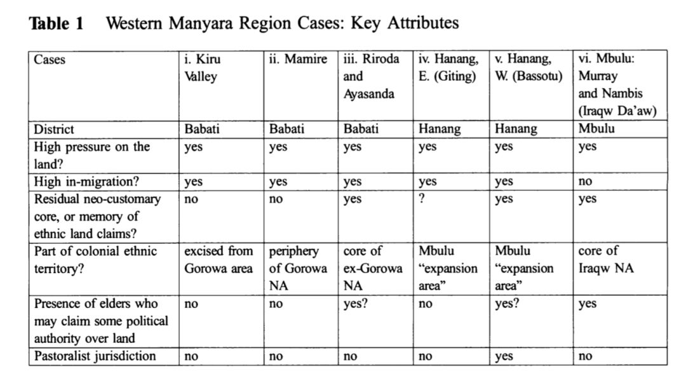

收录于合集
文献来源 ： Catherine Boone, Lydia Nyeme, " Land Institutions and Political Ethnicity in Africa: Evidence from Tanzania" , Comparative Politics , Vol. 48, No. 1 (October 2015), pp. 67-86
作者简介 ： Catherine Boone，伦敦政治经济学院（ London School of Economics and Political Science）政府系比较政治学教授，主要研究兴趣为西非的工业、商业和土地政治。其代表作还有：Property and Political Order: Land Rights and the Structure of Politics in Africa (Cambridge,2014) ； Political Topographies of the African State (Cambridge, 2003)
主页：http://www.catherineboone.net/

在比较政治分析中，很多学者认为正式的制度往往不是解释非洲政治现象的重要因素，因为非洲国家往往依靠非正式的、个人化的庇护网络来运转。而诸如非洲的族性（ethnicity 族群的性质和特点）被认为是一个外生于国家制度的变量，对非洲许多政治现象（诸如腐败、脆弱国家、内战）具有解释力。本文则推翻了这一看法，作者认为，产权制度，尤其是土地占有制度，决定了在非洲乡村，族性是否重要、族群政治是否显著。
土地制度的类型及其政治影响
新传统制度（neocustomary regimes）
大多数对于非洲土地制度的研究主要关注所谓的新传统土地制度（neocustomary land regimes）的起源和影响。这种土地制度以殖民时期的间接统治为基础，并在后殖民时代在国家作出一定修正后继续存在。在这一土地制度下，族群身份是获得和使用土地的权利基础的。这就在族群的土地上（ethnic homeland）的土地使用者中创造出了“本地人（natives）”和“外地人（non- natives）”的区别。本地人身份（也是官方识别的族群成员身份）提供了使用相应族群土地的天然权利。外地人想要使用土地必须和相应族群中的地主协商以获得准许。因此，澄清每个农民的族性对于土地使用制度的运转是十分必要的。此外，新传统制度还赋予了国家认定的酋长和长老在参与管理土地事务方面的权力，让他们成为国家和乡村成员之间的中间人。
国家土地占有制（statist land tenure regimes）
国家土地占有制不依靠以族群为基础的土地分配原则，在这一制度下，中央政府的官员直接操作土地分配事宜。在国家土地占有制下会产生两个政治影响。一是由于国家土地占有制不根据族群身份进行分配，因此族性的重要性大大降低了。二是，由于国家在土地管理中的重要地位，围绕土地的纠纷和冲突可能会根据层级上升到国家的司法和选举的制度层面上来。
后殖民时代的坦桑尼亚是一个重要的案例，因为政府在全国范围内实行了土地国有化。在土地事务的行政和司法上，传统权威并没有得到国家授权，族群的土地权益也没有被制度化。因此我们可以通过坦桑尼亚的案例来检验国家土地占有制是否会产生预期的政治影响。
国家土地占有制在坦桑尼亚的发展
坦桑尼亚今天的土地制度经历了七个关键的发展阶段。第一个是殖民时期的间接统治阶段。酋长被殖民政府授权管理土地。但是当时坦桑尼亚的间接统治也有它的独特之处，法律直接将土地的相关权利授予了土地使用者而不是族群。第二个阶段是独立运动方兴未艾的时期，政府用直接管理代替了过去的乡村酋长的间接管理。第三个阶段是1967年发布阿鲁沙宣言（Arusha Declaration）的阶段。此时政府开始土地国有化，包括外国人的土地。第四个阶段是乌贾马（Ujamaa）阶段，政府大量强制国民迁居，大概有一半的乡村人口迁居。这一举措重塑了地方的政治结构。第五个阶段是“社会主义的退却阶段”（roll back of socialism），但政府驳回了所有寻求在乌贾马时期被剥夺的补偿。第六个阶段就是土地法案（Land Act）的颁布。此时出现了从地方到中央的土地法庭。第七个阶段是土地的商业化阶段。个人开始可以租借土地。但由于坦桑尼亚为土地裁决构造的法律条款和机构，导致有人认为坦桑尼亚的土地纠纷司法化了，社会和政治问题转变为了一个法律问题。
案例分析：国家土地占有制及其政治影响
**
**

从表中可知，所有六个案例都面临很高的土地压力，其中五个属于人口迁入地。表中第五、六行说明了哪个案例有过殖民时代间接统治的经历和国家识别的族群土地权。历史上的族群土地权利让我们能够更好的检验土地国有化在降低族性显著性上的作用。第七行说明了在土地事务上是否存在具有政治权威的长老，由此可为我们对土地纠纷的扩大化效应提供很好的检验。最后一行表明此地是否属于牧区。在坦桑尼亚，牧民的土地权利宣称有时往往还要早于部族。
通过案例研究作者发现，对于土地竞争和土地纠纷的公共讨论并没有涉及到族群土地权利的探讨，即便在人口迁入地区也是这样。没有人利用族群冲突的噱头。第二个发现是在所有案例中，土地纠纷都是通过正式的机构来解决的，出现了通过地方法庭逐级上诉的现象。其中有三个案例，土地冲突上升到了国家选举的层面上。在新传统土地制度下，土地争端往往是在地方上解决的。
结论
土地制度作为非洲乡村最重要的政治制度，常常在比较政治分析中被忽视，本文通过对非洲土地占有制的类型学分析发现，不同的土地制度会带来不同政治影响。这一发现挑战了之前政治科学家和经济学家们把族性当做解释非洲政治现象的外生变量的做法。这一研究表明，族性在经济和政治上的显著作用是新传统土地制度的一个作用结果。这一发现也为非洲政治的一个谜题提供了答案：为什么坦桑尼亚的各部族的族性并不明显，而坦桑尼亚的邻国却有着非常显著的族性区别。目前为止，我们还不能说坦桑尼亚的土地国有制度提供了对坦桑尼亚强国族认同的解释，但是我们至少可以说这一制度安排推动了这一结果的出现。土地占有制在非洲的国家构建中具有重要作用。


政观
感谢您支持学术公益
微信扫一扫赞赏作者 __赞赏
已喜欢，对作者说句悄悄话
取消 __
发送给作者
发送
最多40字，当前共字
上一页 1/3 下一页
长按二维码向我转账
感谢您支持学术公益
受苹果公司新规定影响，微信 iOS 版的赞赏功能被关闭，可通过二维码转账支持公众号。